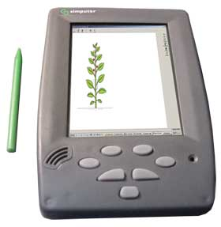
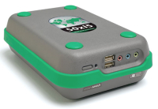
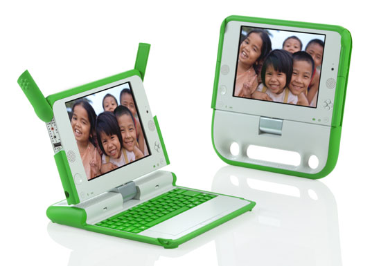

Low-cost innovation
This first low-cost computer was not intended as a “computer for the poor,” but was instead an attempt to extend the range of people having access to computers—in this case, from businesses to home users – by drastically reducing device costs. The second wave of low-cost PCs came in the early days of the World Wide Web. Products such as the Net PC were conceptualized (Russel, 1997), but never made it to widespread production, because the 1990s saw such rapid decline in PC prices that a low enough threshold for a “computer for the poor,” as then imagined, could be attained by the market without any need to innovate. Back then, a $500 computer seemed like a quantum leap (Neugass, 1996), and most attention on the cost minimizing side was directed toward optimizing the thin client architecture (Gaw, Marsh et al., 1998).
This was, in some sense, understandable because of the dramatic drop in computer prices through most of that period. Yet the computer industry remained profitable due, quite simply, to the increase in the number of families in the developed world that annually became new consumers of home computers through this period (Bresnahan & Malerba, 1999). We argue that, on the business side, it was partly the normalization of demand through the developed world that expanded the interest of major companies in developing products for emerging markets.
This new wave of devices aimed to concurrently deal with what we see as three related, but sufficiently separate issues. The first, and most emphasized, was the reduction of the device cost. The second was the creation of form factors and functionalities specific to usage in developing countries, accounting for the lack of urbanization and infrastructure.
This second factor was, at times, equated with building robust machines that withstood harsh weather, dust, and poor quality power, often gleaning inspiration from wearable computers for combat situations (Zieniewicz, Johnson et al., 2002). The third factor was that of “usage appropriateness,” including issues related to literacy, cultural appropriateness, and social norms of resource sharing.
Simputer
The pioneer in this most recent wave was the Simputer project that originated in 1998. The Simputer, or “Simple Inexpensive Multilingual Computer,” (Chandru, Deshpande et al., 2001) aimed to address these three sets of issues. The device was sold at a considerably lower price point of US$200 compared to the average computer cost of US$1,000 on the market at the time, even though it was originally envisioned to cost as little as US$100. The Simputer attempted to work across the range of issues in building for developing regions: it had a damage-resistant casing; a plastic cover for dusty and hot weather; large, sturdy buttons for rough use; and an entirely new visual and input interface.
The Simputer group put a significant effort into developing an intuitive UI with an OS interface designed with the needs of users new to technology and textual interfaces in mind. The Simputer featured icon-based screens and speech synthesis capability and was intended to be easily shared, with an individual ºash card for each user.
The Simputer did not do very well in the market, for reasons we discuss later, but another project, with a somewhat orthogonal strategy toward providing low-cost computers, was taking shape in Brazil around the same time. Both projects came from academia in respective countries and were built with a Linux backbone to reduce the cost of the OS. Unlike the Simputer, the Computador Popular (CP) had very little device-level innovation.
In fact, the CP was nothing more than a plain, stripped down version of a PC running Linux, but the project was more important for a different reason: it was the first project within the ICTD space to actively seek government intervention to subsidize the cost of personal computers through reduced taxes and loans. This device was to be priced at US$300.
Private Industry Innovation
By the turn of the millennium, there was a burst of projects in this same arena for a number of reasons (cited above) as reflected in the entry of big tech companies into this space (Collins, 2007). Arguably, many of these tech companies departed slightly from their core businesses and competencies to try their hand at selling new devices in new markets, often with the unusual business model of designing products meant for markets that could not buy the products themselves.
Instead, they had to be sold through institutional buyers, such as governments, philanthropies, or international agencies. Oracle had a brief brush with the “New Internet Computer” (started around 2000 and abandoned around 2003), which was priced roughly at US$199. Chip manufacturer Via Technologies designed a low-cost box-PC similar to the AMD PIC1 at a price point of approximately US$250. Intel, AMD’s chief competitor, had its Community PC project and Classmate along with a collaborative project in China called the Beijing Rural PC.
HP experimented with the 441 device, with a changed Linux kernel to support four keyboards and screens from a single processor, and priced at approximately US$1,200 for the entire unit. This attempt was abandoned, along with its parent e-inclusion program, in 2005, although the technology has lived on in products such as the “Useful Desktop Multiplier.” Recently, NComputing released the X300 that uses low-cost access terminals connected over Ethernet to share a single PC with up to seven users, eventually hitting a price point of US$200 for three users, excluding monitors and peripherals.
A quick survey of ICTD projects shows that over 50 projects in the past 10 years have attempted to create low-cost computers for developing regions, a large chunk of them small companies assembling PCs in the BRIC nations, featuring brands like Fulong Mini-PC, and E-DUC, Sirius, and SofComp, as well as more rugged products such as the SuperGenius Bharat PC, which, like the AMDPIC, was built to withstand rough use.
An unlikely constituent of the low-cost PC market was the NGO world, with a number of experiments like the pedal-powered Jhai PC, and social entrepreneurship ventures like Inveneo that again straddled the space between being outright market products and external funding-dependent development projects.
One Laptop Per Child
Probably the most discussed project, and arguably the one with the largest expectations, is the One Laptop Per Child (OLPC) initiative. Also originally known as the $100 laptop, or more recently the XO-1, the current price of the device is about US$208, but is expected to decrease with volume. This device, the brainchild of some of the leading scientists of the MIT Media Labs, is an inexpensive, low-power laptop designed for harsh conditions in developing countries and intended for distribution to children around the developing world. In many ways, the OLPC has come to exemplify the inexpensive computer space, but not just because of its charismatic promoter, Nicholas Negroponte, and the history of the Media Lab behind it.
The idea behind the OLPC simultaneously raised hopes and criticisms; partner organizations frequently came and went (both Intel and Microsoft have, at different times, been supporters and opponents), and their participation frequently raised eyebrows.